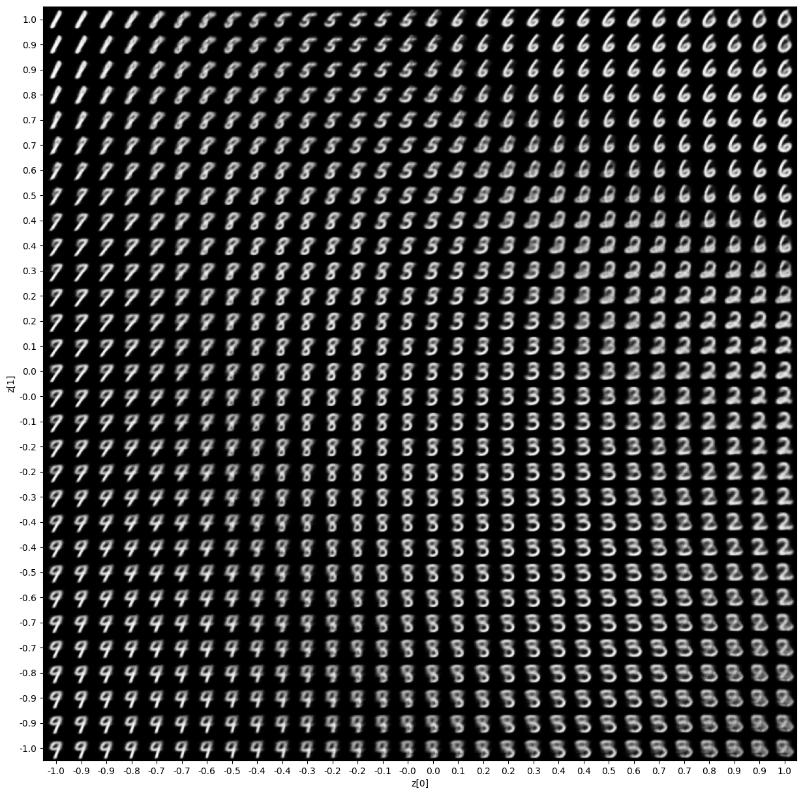
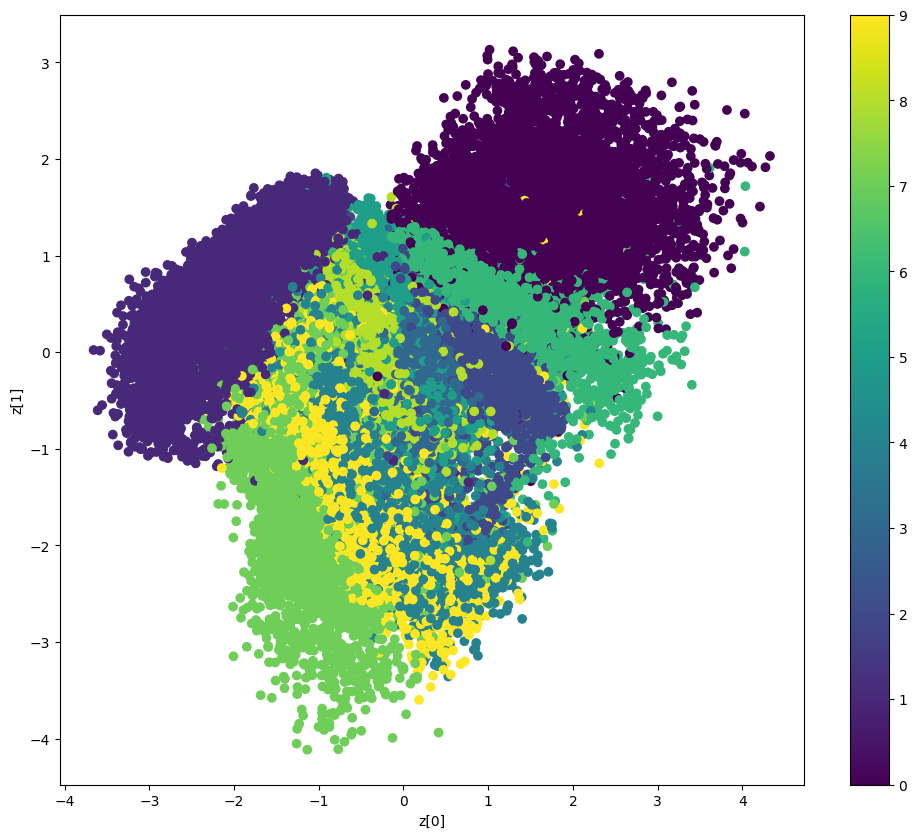

Variational AutoEncoder#
Author: fchollet
Date created: 2020/05/03
Last modified: 2023/11/22
Description: Convolutional Variational AutoEncoder (VAE) trained on MNIST digits.
Setup#
import os
os.environ["KERAS_BACKEND"] = "tensorflow"
import numpy as np
import tensorflow as tf
import keras
from keras import layers
2023-12-12 22:51:29.495612: I tensorflow/core/util/port.cc:110] oneDNN custom operations are on. You may see slightly different numerical results due to floating-point round-off errors from different computation orders. To turn them off, set the environment variable `TF_ENABLE_ONEDNN_OPTS=0`.
2023-12-12 22:51:29.618120: I tensorflow/core/platform/cpu_feature_guard.cc:183] This TensorFlow binary is optimized to use available CPU instructions in performance-critical operations.
To enable the following instructions: SSE3 SSE4.1 SSE4.2 AVX, in other operations, rebuild TensorFlow with the appropriate compiler flags.
Create a sampling layer#
class Sampling(layers.Layer):
"""Uses (z_mean, z_log_var) to sample z, the vector encoding a digit."""
def call(self, inputs):
z_mean, z_log_var = inputs
batch = tf.shape(z_mean)[0]
dim = tf.shape(z_mean)[1]
epsilon = tf.random.normal(shape=(batch, dim))
return z_mean + tf.exp(0.5 * z_log_var) * epsilon
Build the encoder#
latent_dim = 2
encoder_inputs = keras.Input(shape=(28, 28, 1))
x = layers.Conv2D(32, 3, activation="relu", strides=2, padding="same")(encoder_inputs)
x = layers.Conv2D(64, 3, activation="relu", strides=2, padding="same")(x)
x = layers.Flatten()(x)
x = layers.Dense(16, activation="relu")(x)
z_mean = layers.Dense(latent_dim, name="z_mean")(x)
z_log_var = layers.Dense(latent_dim, name="z_log_var")(x)
z = Sampling()([z_mean, z_log_var])
encoder = keras.Model(encoder_inputs, [z_mean, z_log_var, z], name="encoder")
encoder.summary()
Model: "encoder"
__________________________________________________________________________________________________
Layer (type) Output Shape Param # Connected to
==================================================================================================
input_1 (InputLayer) [(None, 28, 28, 1)] 0 []
conv2d (Conv2D) (None, 14, 14, 32) 320 ['input_1[0][0]']
conv2d_1 (Conv2D) (None, 7, 7, 64) 18496 ['conv2d[0][0]']
flatten (Flatten) (None, 3136) 0 ['conv2d_1[0][0]']
dense (Dense) (None, 16) 50192 ['flatten[0][0]']
z_mean (Dense) (None, 2) 34 ['dense[0][0]']
z_log_var (Dense) (None, 2) 34 ['dense[0][0]']
sampling (Sampling) (None, 2) 0 ['z_mean[0][0]',
'z_log_var[0][0]']
==================================================================================================
Total params: 69,076
Trainable params: 69,076
Non-trainable params: 0
__________________________________________________________________________________________________
2023-12-12 22:51:31.395699: I tensorflow/compiler/xla/stream_executor/cuda/cuda_gpu_executor.cc:1013] successful NUMA node read from SysFS had negative value (-1), but there must be at least one NUMA node, so returning NUMA node zero. See more at https://github.com/torvalds/linux/blob/v6.0/Documentation/ABI/testing/sysfs-bus-pci#L344-L355
2023-12-12 22:51:31.416886: I tensorflow/compiler/xla/stream_executor/cuda/cuda_gpu_executor.cc:1013] successful NUMA node read from SysFS had negative value (-1), but there must be at least one NUMA node, so returning NUMA node zero. See more at https://github.com/torvalds/linux/blob/v6.0/Documentation/ABI/testing/sysfs-bus-pci#L344-L355
2023-12-12 22:51:31.417019: I tensorflow/compiler/xla/stream_executor/cuda/cuda_gpu_executor.cc:1013] successful NUMA node read from SysFS had negative value (-1), but there must be at least one NUMA node, so returning NUMA node zero. See more at https://github.com/torvalds/linux/blob/v6.0/Documentation/ABI/testing/sysfs-bus-pci#L344-L355
2023-12-12 22:51:31.418965: I tensorflow/compiler/xla/stream_executor/cuda/cuda_gpu_executor.cc:1013] successful NUMA node read from SysFS had negative value (-1), but there must be at least one NUMA node, so returning NUMA node zero. See more at https://github.com/torvalds/linux/blob/v6.0/Documentation/ABI/testing/sysfs-bus-pci#L344-L355
2023-12-12 22:51:31.419096: I tensorflow/compiler/xla/stream_executor/cuda/cuda_gpu_executor.cc:1013] successful NUMA node read from SysFS had negative value (-1), but there must be at least one NUMA node, so returning NUMA node zero. See more at https://github.com/torvalds/linux/blob/v6.0/Documentation/ABI/testing/sysfs-bus-pci#L344-L355
2023-12-12 22:51:31.419156: I tensorflow/compiler/xla/stream_executor/cuda/cuda_gpu_executor.cc:1013] successful NUMA node read from SysFS had negative value (-1), but there must be at least one NUMA node, so returning NUMA node zero. See more at https://github.com/torvalds/linux/blob/v6.0/Documentation/ABI/testing/sysfs-bus-pci#L344-L355
2023-12-12 22:51:31.490952: I tensorflow/compiler/xla/stream_executor/cuda/cuda_gpu_executor.cc:1013] successful NUMA node read from SysFS had negative value (-1), but there must be at least one NUMA node, so returning NUMA node zero. See more at https://github.com/torvalds/linux/blob/v6.0/Documentation/ABI/testing/sysfs-bus-pci#L344-L355
2023-12-12 22:51:31.491061: I tensorflow/compiler/xla/stream_executor/cuda/cuda_gpu_executor.cc:1013] successful NUMA node read from SysFS had negative value (-1), but there must be at least one NUMA node, so returning NUMA node zero. See more at https://github.com/torvalds/linux/blob/v6.0/Documentation/ABI/testing/sysfs-bus-pci#L344-L355
2023-12-12 22:51:31.491124: I tensorflow/compiler/xla/stream_executor/cuda/cuda_gpu_executor.cc:1013] successful NUMA node read from SysFS had negative value (-1), but there must be at least one NUMA node, so returning NUMA node zero. See more at https://github.com/torvalds/linux/blob/v6.0/Documentation/ABI/testing/sysfs-bus-pci#L344-L355
2023-12-12 22:51:31.491197: I tensorflow/core/common_runtime/gpu/gpu_device.cc:1638] Created device /job:localhost/replica:0/task:0/device:GPU:0 with 12820 MB memory: -> device: 0, name: NVIDIA RTX A4500 Laptop GPU, pci bus id: 0000:01:00.0, compute capability: 8.6
Build the decoder#
latent_inputs = keras.Input(shape=(latent_dim,))
x = layers.Dense(7 * 7 * 64, activation="relu")(latent_inputs)
x = layers.Reshape((7, 7, 64))(x)
x = layers.Conv2DTranspose(64, 3, activation="relu", strides=2, padding="same")(x)
x = layers.Conv2DTranspose(32, 3, activation="relu", strides=2, padding="same")(x)
decoder_outputs = layers.Conv2DTranspose(1, 3, activation="sigmoid", padding="same")(x)
decoder = keras.Model(latent_inputs, decoder_outputs, name="decoder")
decoder.summary()
Model: "decoder"
_________________________________________________________________
Layer (type) Output Shape Param #
=================================================================
input_2 (InputLayer) [(None, 2)] 0
dense_1 (Dense) (None, 3136) 9408
reshape (Reshape) (None, 7, 7, 64) 0
conv2d_transpose (Conv2DTra (None, 14, 14, 64) 36928
nspose)
conv2d_transpose_1 (Conv2DT (None, 28, 28, 32) 18464
ranspose)
conv2d_transpose_2 (Conv2DT (None, 28, 28, 1) 289
ranspose)
=================================================================
Total params: 65,089
Trainable params: 65,089
Non-trainable params: 0
_________________________________________________________________
Define the VAE as a Model with a custom train_step#
class VAE(keras.Model):
def __init__(self, encoder, decoder, **kwargs):
super().__init__(**kwargs)
self.encoder = encoder
self.decoder = decoder
self.total_loss_tracker = keras.metrics.Mean(name="total_loss")
self.reconstruction_loss_tracker = keras.metrics.Mean(
name="reconstruction_loss"
)
self.kl_loss_tracker = keras.metrics.Mean(name="kl_loss")
@property
def metrics(self):
return [
self.total_loss_tracker,
self.reconstruction_loss_tracker,
self.kl_loss_tracker,
]
def train_step(self, data):
with tf.GradientTape() as tape:
z_mean, z_log_var, z = self.encoder(data)
reconstruction = self.decoder(z)
reconstruction_loss = tf.reduce_mean(
tf.reduce_sum(
keras.losses.binary_crossentropy(data, reconstruction),
axis=(1, 2),
)
)
kl_loss = -0.5 * (1 + z_log_var - tf.square(z_mean) - tf.exp(z_log_var))
kl_loss = tf.reduce_mean(tf.reduce_sum(kl_loss, axis=1))
total_loss = reconstruction_loss + kl_loss
grads = tape.gradient(total_loss, self.trainable_weights)
self.optimizer.apply_gradients(zip(grads, self.trainable_weights))
self.total_loss_tracker.update_state(total_loss)
self.reconstruction_loss_tracker.update_state(reconstruction_loss)
self.kl_loss_tracker.update_state(kl_loss)
return {
"loss": self.total_loss_tracker.result(),
"reconstruction_loss": self.reconstruction_loss_tracker.result(),
"kl_loss": self.kl_loss_tracker.result(),
}
Train the VAE#
(x_train, _), (x_test, _) = keras.datasets.mnist.load_data()
mnist_digits = np.concatenate([x_train, x_test], axis=0)
mnist_digits = np.expand_dims(mnist_digits, -1).astype("float32") / 255
vae = VAE(encoder, decoder)
vae.compile(optimizer=keras.optimizers.Adam())
vae.fit(mnist_digits, epochs=30, batch_size=128)
Downloading data from https://storage.googleapis.com/tensorflow/tf-keras-datasets/mnist.npz
11490434/11490434 [==============================] - 0s 0us/step
Epoch 1/30
547/547 [==============================] - 4s 6ms/step - loss: 257.5825 - reconstruction_loss: 207.6190 - kl_loss: 1.9425
Epoch 2/30
547/547 [==============================] - 3s 5ms/step - loss: 176.4085 - reconstruction_loss: 166.6538 - kl_loss: 4.3756
Epoch 3/30
547/547 [==============================] - 3s 5ms/step - loss: 163.9220 - reconstruction_loss: 158.2623 - kl_loss: 5.0386
Epoch 4/30
547/547 [==============================] - 3s 5ms/step - loss: 161.1476 - reconstruction_loss: 155.5576 - kl_loss: 5.2499
Epoch 5/30
547/547 [==============================] - 3s 5ms/step - loss: 159.3078 - reconstruction_loss: 153.8303 - kl_loss: 5.3880
Epoch 6/30
547/547 [==============================] - 3s 5ms/step - loss: 158.2953 - reconstruction_loss: 152.5573 - kl_loss: 5.4917
Epoch 7/30
547/547 [==============================] - 3s 5ms/step - loss: 156.8776 - reconstruction_loss: 151.6032 - kl_loss: 5.5633
Epoch 8/30
547/547 [==============================] - 3s 5ms/step - loss: 156.3684 - reconstruction_loss: 150.7830 - kl_loss: 5.6098
Epoch 9/30
547/547 [==============================] - 3s 5ms/step - loss: 155.7382 - reconstruction_loss: 150.1282 - kl_loss: 5.6492
Epoch 10/30
547/547 [==============================] - 3s 5ms/step - loss: 155.5879 - reconstruction_loss: 149.6189 - kl_loss: 5.7019
Epoch 11/30
547/547 [==============================] - 3s 5ms/step - loss: 154.8645 - reconstruction_loss: 149.0552 - kl_loss: 5.7434
Epoch 12/30
547/547 [==============================] - 3s 5ms/step - loss: 154.2977 - reconstruction_loss: 148.7073 - kl_loss: 5.7568
Epoch 13/30
547/547 [==============================] - 3s 6ms/step - loss: 154.3490 - reconstruction_loss: 148.3257 - kl_loss: 5.7983
Epoch 14/30
547/547 [==============================] - 3s 6ms/step - loss: 154.0844 - reconstruction_loss: 148.0372 - kl_loss: 5.8116
Epoch 15/30
547/547 [==============================] - 3s 5ms/step - loss: 153.1294 - reconstruction_loss: 147.6631 - kl_loss: 5.8418
Epoch 16/30
547/547 [==============================] - 3s 5ms/step - loss: 153.3837 - reconstruction_loss: 147.3996 - kl_loss: 5.8559
Epoch 17/30
547/547 [==============================] - 3s 5ms/step - loss: 152.9064 - reconstruction_loss: 147.1612 - kl_loss: 5.8673
Epoch 18/30
547/547 [==============================] - 3s 5ms/step - loss: 152.5920 - reconstruction_loss: 146.8719 - kl_loss: 5.9139
Epoch 19/30
547/547 [==============================] - 3s 5ms/step - loss: 152.4571 - reconstruction_loss: 146.6375 - kl_loss: 5.9127
Epoch 20/30
547/547 [==============================] - 3s 5ms/step - loss: 152.4698 - reconstruction_loss: 146.5640 - kl_loss: 5.9332
Epoch 21/30
547/547 [==============================] - 3s 5ms/step - loss: 152.1880 - reconstruction_loss: 146.2602 - kl_loss: 5.9591
Epoch 22/30
547/547 [==============================] - 3s 5ms/step - loss: 152.1357 - reconstruction_loss: 146.1621 - kl_loss: 5.9623
Epoch 23/30
547/547 [==============================] - 3s 5ms/step - loss: 151.8752 - reconstruction_loss: 145.9642 - kl_loss: 5.9926
Epoch 24/30
547/547 [==============================] - 3s 5ms/step - loss: 151.7682 - reconstruction_loss: 145.7550 - kl_loss: 5.9989
Epoch 25/30
547/547 [==============================] - 3s 5ms/step - loss: 151.5200 - reconstruction_loss: 145.6317 - kl_loss: 6.0177
Epoch 26/30
547/547 [==============================] - 3s 5ms/step - loss: 150.7334 - reconstruction_loss: 145.4736 - kl_loss: 6.0174
Epoch 27/30
547/547 [==============================] - 3s 5ms/step - loss: 150.8752 - reconstruction_loss: 145.3222 - kl_loss: 6.0493
Epoch 28/30
547/547 [==============================] - 3s 5ms/step - loss: 151.0142 - reconstruction_loss: 145.2256 - kl_loss: 6.0480
Epoch 29/30
547/547 [==============================] - 3s 5ms/step - loss: 150.7913 - reconstruction_loss: 145.0293 - kl_loss: 6.0731
Epoch 30/30
547/547 [==============================] - 3s 5ms/step - loss: 150.8448 - reconstruction_loss: 144.9143 - kl_loss: 6.0802
2023-12-12 22:51:33.198058: I tensorflow/compiler/xla/stream_executor/cuda/cuda_dnn.cc:424] Loaded cuDNN version 8903
2023-12-12 22:51:33.349396: I tensorflow/compiler/xla/stream_executor/cuda/cuda_blas.cc:655] TensorFloat-32 will be used for the matrix multiplication. This will only be logged once.
<keras.callbacks.History at 0x7f3e4c303d60>
Display a grid of sampled digits#
import matplotlib.pyplot as plt
def plot_latent_space(vae, n=30, figsize=15):
# display a n*n 2D manifold of digits
digit_size = 28
scale = 1.0
figure = np.zeros((digit_size * n, digit_size * n))
# linearly spaced coordinates corresponding to the 2D plot
# of digit classes in the latent space
grid_x = np.linspace(-scale, scale, n)
grid_y = np.linspace(-scale, scale, n)[::-1]
for i, yi in enumerate(grid_y):
for j, xi in enumerate(grid_x):
z_sample = np.array([[xi, yi]])
x_decoded = vae.decoder.predict(z_sample, verbose=0)
digit = x_decoded[0].reshape(digit_size, digit_size)
figure[
i * digit_size : (i + 1) * digit_size,
j * digit_size : (j + 1) * digit_size,
] = digit
plt.figure(figsize=(figsize, figsize))
start_range = digit_size // 2
end_range = n * digit_size + start_range
pixel_range = np.arange(start_range, end_range, digit_size)
sample_range_x = np.round(grid_x, 1)
sample_range_y = np.round(grid_y, 1)
plt.xticks(pixel_range, sample_range_x)
plt.yticks(pixel_range, sample_range_y)
plt.xlabel("z[0]")
plt.ylabel("z[1]")
plt.imshow(figure, cmap="Greys_r")
plt.show()
plot_latent_space(vae)

Display how the latent space clusters different digit classes#
def plot_label_clusters(vae, data, labels):
# display a 2D plot of the digit classes in the latent space
z_mean, _, _ = vae.encoder.predict(data, verbose=0)
plt.figure(figsize=(12, 10))
plt.scatter(z_mean[:, 0], z_mean[:, 1], c=labels)
plt.colorbar()
plt.xlabel("z[0]")
plt.ylabel("z[1]")
plt.show()
(x_train, y_train), _ = keras.datasets.mnist.load_data()
x_train = np.expand_dims(x_train, -1).astype("float32") / 255
plot_label_clusters(vae, x_train, y_train)
